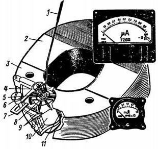
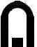
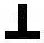
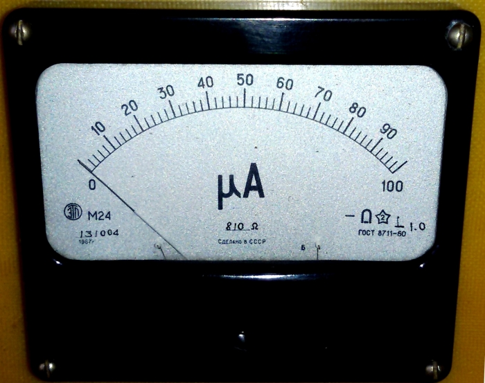

Стрелочные электроизмерительные приборы
Токи измеряют амперметрами, миллиамперметрами, или микроамперметрами, напряжения — вольтаметрами, а то и милливольтметрами. Несмотря на различия в наименованиях, все эти приборы работают принципиально одинаково: отклонение стрелки показывает, что через прибор течет ток. Чем больше ток, тем больше отклонение стрелки прибора. Шкалу прибора, в зависимости от того, для каких измерений он приспособлен, градуируют соответственно, в амперах, миллиамперах, вольтах. Такой же прибор можно использовать и в омметре — приборе для прямого (а не косвенного, как в измерителе RCL) измерения сопротивлений цепей, резисторов.
Существует несколько систем стрелочных приборов: электромагнитные, магнитоэлектрические, электродинамические. Для радиотехнических же измерений применяют главным образом приборы магнитоэлектрической системы, обладающие по сравнению с приборами других систем рядом преимуществ, в том числе высокой чувствительностью, большой точностью результатов измерений и равномерностью шкал.
Устройство стрелочного прибора магнитоэлектрической системы показано на рис. 1. Измерительный механизм прибора состоит из неподвижной магнитной системы и подвижной части, связанной с отсчетным приспособлением. В магнитную систему входят постоянный магнит 2 с полюсными наконечниками 3 и цилиндрический сердечник 10. Полюсные наконечники и сердечник изготовлены из магнитно-мягкого материала («мягкими» называют сплавы железа, обладающие малым магнитным сопротивлением, но сами не намагничивающиеся). Воздушный зазор между полюсными наконечниками и сердечником везде одинаков, благодаря чему в зазоре образуется равномерное магнитное поле, что является обязательным условием для равномерности шкалы.

Рис. 1 - Устройство измерительного механизма магнитоэлектрической системы
и внешний вид приборов типов М24 и М49
Подвижная часть механизма прибора состоит из рамки 11, двух кернов — полуосей 5 рамки, двух плоских спиральных пружин 8 и стрелки 1 отсчетного приспособления с противовесами. Рамка представляет собой катушку, намотанную изолированным медным или алюминиевым проводом на прямоугольном каркасе из тонкой бумаги или фольги (рамки приборов особо высокой чувствительности бескаркасные). Керны служат осью вращения рамки. Для уменьшения трения концы подпятников 4, на которые опираются керны, выполняют из полудрагоценных камней. Керны прикреплены к рамке с помощью буксов.
Спиральные пружины, изготовляемые обычно из ленты фосфористой бронзы, создают противодействующий момент, который стремится возвратить рамку в исходное положение при ее отклонении. Они, кроме того, используются и как токоотводы. Наружный конец одной из пружин скреплен с корректором.
Корректор, состоящий из эксцентрика 6, укрепленного на корпусе прибора, и рычага 7, соединенного с пружиной, служит для установки стрелки прибора на нулевое деление шкалы. При повороте эксцентрика поворачивается и рычаг, вызывая дополнительное закручивание пружины. Подвижная часть механизма при этом поворачивается, и стрелка отклоняется на соответствующий угол.
Электроизмерительный прибор этой системы работает следующим образом. Когда через рамку течет ток, вокруг нее образуется магнитное поле. Это поле взаимодействует с полем постоянного магнита, в результате чего рамка вместе со стрелкой поворачивается, отклоняясь от первоначального положения. Отклонение стрелки от нулевой отметки будет тем большим, чем больше ток в катушке. При повороте рамки спиральные пружины закручиваются. Как только прекращается ток в рамке, пружины возвращают ее, а вместе с нею и стрелку прибора в нулевое положение.
Таким образом, прибор магнитоэлектрической системы является не чем иным, как преобразователем постоянного тока в механическое усилие, поворачивающее рамку. О величине этого тока судят по углу, на который под его воздействием смогла повернуться рамка.
Основных электрических параметров, по которым можно судить о возможном применении прибора для тех или иных измерений, два:
- ток полного отклонения стрелки, т. е. наибольший (предельный) ток, при котором стрелка отклоняется до конечной отметки шкалы, и
- сопротивление рамки прибора Rи.
О первом параметре прибора обычно говорит его шкала. Так, например, если на шкале написано "мкА" (микроамперметр) и возле конечной отметки шкалы стоит число 100, значит, ток полного отклонения стрелки равен 100 мкА (0,1 мА). Такой прибор можно включать только у ту цепь, ток в которой не превышает 100 мкА. Больший ток может повредить прибор. Величину второго параметра Rи необходимого при расчете конструируемых измерительных приборов, часто указывают на шкале.
Для комбинированного измерительного прибора потребуется микроамперметр на ток 100 — 500 мкА, желательно с большой шкалой. Чем меньше ток, на который он рассчитан, и больше шкала, тем точнее будет конструируемый на его базе измерительный прибор.
Систему измерительного прибора можно узнать по условным знакам на шкале. Если он изображает подковообразный магнит с прямоугольником между его полюсами, значит, прибор магнитоэлектрической системы с подвижной рамкой. Рядом с ним еще знак, указывающий положение прибора, в котором он должен находиться при измерениях. Если не придерживаться этого указания, то прибор будет давать неточные показания.
Эти и некоторые другие условные обозначения на шкалах приборов указаны в таблице 1.
Таблица 1
 |
— магнитоэлектрический прибор с подвижной рамкой |
| — прибор предназначен для измерения постоянного тока | |
| — рабочее положение шкалы прибора горизонтальное | |
 |
— рабочее положение шкалы прибора вертикальное |
| — между корпусом и магнитоэлектрической системой прибора напряжение не должно превышать 2 кВ | |
| 1,0 | — класс точности прибора |
Например, прибор М24, внешний вид которого показан на рис. 2, является микроамперметром (обозначение мкА) и рассчитан для измерения постоянных токов не более чем до 100 мкА (0,1 мА). Сопротивление его рамки — 810 Ом.

Рис. 2 - Электроизмерительный прибор М24